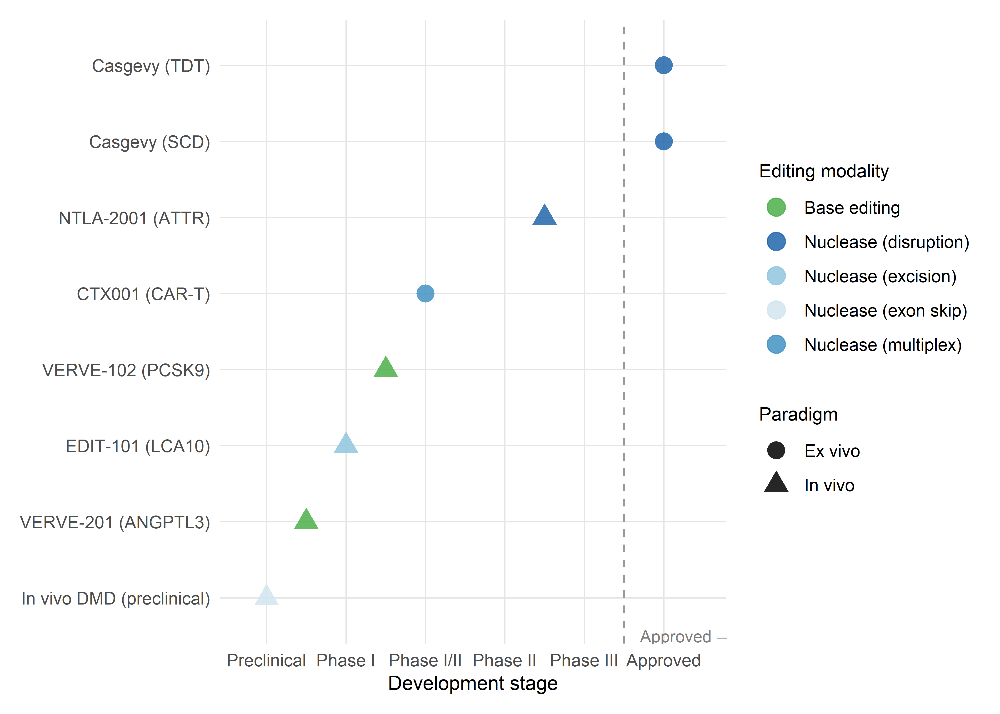

5 The Clinical Pipeline: From Bench to Bedside
5.1 Introduction: translating molecular precision into therapeutic reality
The preceding chapter examined the diseases that CRISPR-AI systems aim to treat. What follows is an account of how those therapies reach patients — and why that process differs structurally from conventional drug development in ways that reshape access, evidence generation, and regulatory governance. The clinical pipeline for genome editing therapies is not simply a faster or more precise version of the pharmaceutical pipeline: it is a different kind of pipeline, with its own manufacturing logic, evidentiary challenges, and regulatory accommodations.
The field currently divides along two delivery strategies. The ex vivo approach, whose leading example is Casgevy (exagamglogene autotemcel), requires the extraction, editing, and reinfusion of a patient’s own cells — a manufacturing process that is patient-specific by necessity, labour-intensive, and geographically constrained. The in vivo approach, advanced by Intellia’s NTLA-2001 for transthyretin amyloidosis and Verve Therapeutics’ VERVE-102 for familial hypercholesterolaemia, delivers editing components directly into the body — a simpler clinical workflow but one that introduces distinct challenges of biodistribution, immunogenicity, and off-target editing in non-target tissues. Each strategy has generated its own clinical evidence, confronted its own regulatory questions, and shaped its own manufacturing supply chain.
The discussion moves from manufacturing through trial design, regulatory approval, and post-marketing surveillance, with particular attention to the points where computational tools — the AI systems of Part I — are deployed, and to the structural features that distinguish genome editing from conventional therapeutics (Schambach et al., 2023).
5.2 Ex vivo gene editing: the current clinical frontier
5.2.1 The Casgevy manufacturing workflow
The production of Casgevy for a single patient involves a sequence of steps that, taken together, constitute one of the most complex manufacturing processes in the history of therapeutics (Frangoul et al., 2021; Frangoul et al., 2024). Understanding this workflow matters not only for appreciating the clinical achievement but also for grasping why each step compounds the scalability constraints that limit Casgevy’s global impact.
The first bottleneck is cell collection. The patient receives plerixafor (a CXCR4 antagonist) to mobilise CD34+ haematopoietic stem and progenitor cells (HSPCs) from the bone marrow into the peripheral blood, followed by leukapheresis. Mobilisation efficiency varies across patients — particularly in SCD, where repeated vaso-occlusive crises may have damaged the bone marrow microenvironment — and insufficient yield at this stage can delay or derail the entire process. The collected product must then be shipped under controlled conditions to a centralised GMP manufacturing facility operated by Lonza, with a third facility approved as of late 2025 to meet growing demand. This shipping step alone introduces a logistical dependency on cold-chain infrastructure and international courier networks that is absent from conventional oral or injectable therapies.
At the manufacturing site, CD34+ cells are enriched by immunomagnetic selection, then electroporated with a ribonucleoprotein (RNP) complex comprising SpCas9 protein and a synthetic single guide RNA targeting the erythroid-specific enhancer of BCL11A (Wu et al., 2019). The electroporation parameters — voltage, pulse duration, RNP concentration, cell density — have been optimised through extensive process development, and the specific conditions are proprietary. After editing, cells are cryopreserved and subjected to a battery of quality control assessments: viability, CD34+ purity, sterility, endotoxin levels, and — most consequentially for release decisions — on-target editing efficiency (measured by next-generation sequencing of the target locus) and off-target assessment. Because each patient’s cells respond differently to electroporation, editing efficiency is unavoidably variable: a manufacturing process that produces 85% allelic disruption in one patient may achieve only 60% in the next, with direct implications for engraftment kinetics and clinical response.
The edited cells are shipped back to the treatment centre, where the patient undergoes myeloablative conditioning with pharmacokinetically dose-adjusted busulfan over four days. This step — the destruction of the patient’s existing bone marrow — is necessary to create ‘space’ for the edited cells to engraft, but it carries significant toxicity: weeks of pancytopenia with attendant risks of infection, bleeding, and organ damage. Patients require prolonged hospitalisation during the engraftment period, typically 4–6 weeks. After discharge, long-term follow-up continues for 15 years under the terms of the regulatory approval.
The entire process, from first cell collection to infusion, takes approximately 6–9 months. As of late 2025, 165 patients had undergone first cell collection, 39 had been infused, and more than 45 authorised treatment centres had been activated globally — numbers that, while growing, remain a tiny fraction of the eligible patient population. The manufacturing workflow is, in effect, a personalised therapy pipeline that operates at artisanal scale within a regulatory framework designed for industrial production.
As of late 2025, the gap between eligible and treated patients is stark: an estimated 100,000 individuals with severe SCD or TDT could benefit from Casgevy in the US and EU alone, but fewer than 40 had been infused (Frangoul et al., 2024). The ratio — approximately 1 in 2,500 — illustrates the manufacturing bottleneck as a structural constraint, not a transient one.
5.2.2 Conditioning regimens and the burden of treatment
The myeloablative conditioning step is arguably the single greatest barrier to broader adoption of ex vivo CRISPR therapies. Busulfan conditioning is associated with acute toxicities (mucositis, hepatic sinusoidal obstruction syndrome, seizures) and long-term risks (secondary malignancies, gonadal failure). For SCD patients — many of whom are children or young adults — the reproductive implications are particularly significant: busulfan is gonadotoxic, and fertility preservation must be offered before conditioning, adding complexity, cost, and emotional burden to an already demanding process (Nickel et al., 2022).
Research into reduced-intensity and non-myeloablative conditioning regimens is active but preliminary. Antibody-based conditioning — using antibodies against CD117 (c-Kit) to selectively deplete HSPCs without broad myeloablation — has shown promise in preclinical models and early clinical testing for non-CRISPR gene therapies, but has not yet been validated in the context of CRISPR-edited cell products. If successful, antibody conditioning could dramatically reduce the toxicity, hospitalisation duration, and infrastructure requirements of ex vivo editing, potentially bringing these therapies within reach of healthcare systems in low- and middle-income countries.
5.2.3 Beyond Casgevy: other ex vivo programmes
Casgevy is not the only ex vivo CRISPR therapy in clinical development, though it is the only one with regulatory approval as of early 2026. Several programmes are advancing through clinical trials with distinct editing strategies. CRISPR-based engineering of chimeric antigen receptor T cells (CAR-T) uses multiplex editing to simultaneously insert the CAR transgene, disrupt the endogenous T cell receptor (to enable allogeneic ‘off-the-shelf’ products), and knock out immune checkpoint genes (to enhance persistence and anti-tumour activity). These allogeneic CAR-T products — if successfully developed — would eliminate the patient-specific manufacturing bottleneck of autologous approaches, though they introduce the challenge of graft-versus-host disease prevention (Chiesa et al., 2023; Ottaviano et al., 2022).
iPSC-derived cell therapies push this logic further: patient fibroblasts or blood cells are reprogrammed to induced pluripotent stem cells, edited at the iPSC stage, differentiated to the desired cell type (e.g., pancreatic beta cells, cardiomyocytes, retinal pigment epithelial cells), and administered to the patient. This approach decouples the editing event from the patient timeline, allowing the generation of banked, quality-controlled edited cell lines that can serve multiple patients — a manufacturing model that differs in kind, not merely in efficiency, from autologous approaches.
5.3 In vivo gene editing: emerging clinical programmes
5.3.1 VERVE-101 and VERVE-102: base editing for cardiovascular disease
The Verve Therapeutics programme targeting PCSK9 — a gene whose inactivation potently reduces LDL cholesterol — is the most advanced in vivo base editing clinical programme and illustrates both the potential and the iterative nature of clinical translation (Laurent et al., 2024).
VERVE-101, the first-generation product, consists of an adenine base editor (ABE) mRNA and a guide RNA targeting PCSK9, encapsulated in an engineered LNP for intravenous delivery to hepatocytes. The Heart-1 Phase 1b trial, initiated in 2022, enrolled 10 patients with heterozygous familial hypercholesterolaemia (HeFH) and established atherosclerotic cardiovascular disease. First-in-human data presented at AHA 2023 demonstrated proof of concept: at the 0.45 mg/kg dose, two patients showed PCSK9 protein reductions of 59% and 84% and LDL-C reductions of 39% and 48%, respectively. The single patient treated at 0.6 mg/kg achieved a 55% LDL-C reduction sustained to at least 180 days (Bellinger et al., 2023).
However, the Heart-1 trial also revealed a safety signal in one participant who developed elevated liver transaminases and low platelet counts, effects attributed to the LNP delivery vehicle rather than the base editing payload. In April 2024, Verve paused Heart-1 enrolment and pivoted to VERVE-102, a second-generation product that uses a proprietary GalNAc-conjugated LNP (GalNAc-LNP) designed to improve liver targeting via the asialoglycoprotein receptor (ASGPR) while reducing uptake by non-hepatic tissues — particularly splenic macrophages, which are thought to mediate the platelet reduction observed with first-generation LNPs.
The Heart-2 Phase 1b trial of VERVE-102, initiated in May 2024, has shown markedly improved results. Initial data reported in April 2025 from 14 patients across three dose cohorts (0.3, 0.45, and 0.6 mg/kg) demonstrated dose-dependent LDL-C reductions, with a mean reduction of 53% and a maximum of 69% in the highest dose cohort. Notably, no treatment-related serious adverse events, clinically significant liver enzyme elevations, or platelet reductions were observed at any dose level — a safety profile that Verve describes as ‘potentially best-in-class’ for LNP-delivered therapeutics. Meanwhile, durability data from the original VERVE-101 Heart-1 trial show sustained base editing effects at nearly two years of follow-up, supporting the mechanistic premise that a single DNA base change produces permanent gene inactivation.
The VERVE-101 → VERVE-102 pivot illustrates a design principle with broad implications: when editing payload and delivery vehicle are engineered as separable modules, safety signals attributable to the vehicle can be resolved without redesigning the therapeutic mechanism. This modularity — discussed in Chapter 3 as an optimisation target — becomes a regulatory advantage, since the base-editing component retains its existing safety and efficacy data.
The VERVE programme is instructive for the broader field in several respects. First, it demonstrates that delivery vehicle safety, not editing payload safety, may be the dose-limiting factor for in vivo CRISPR therapies — a finding that redirects attention to the LNP engineering and optimisation tools discussed in Chapter 3. Second, the rapid pivot from VERVE-101 to VERVE-102 illustrates the modularity of the platform: the same base editor and guide RNA can be repackaged in a new delivery vehicle without redesigning the editing components. Third, the programme’s expansion into additional targets — VERVE-201 (targeting ANGPTL3 for triglycerides) and VERVE-301 (targeting LPA for lipoprotein(a)) — suggests that in vivo base editing of hepatic genes may become a generalised therapeutic modality for cardiometabolic disease, not a one-off proof of concept.
5.3.2 Intellia NTLA-2001 and liver-targeted nuclease editing
The Intellia programme for transthyretin amyloidosis, discussed in Chapter 4 in terms of its disease rationale, is equally significant as a pipeline milestone. NTLA-2001 uses SpCas9 mRNA and a synthetic guide RNA delivered via LNP to disrupt the TTR gene in hepatocytes. The distinction from VERVE is the editing modality: nuclease-mediated gene disruption (producing indels that knock out the gene) rather than base editing (producing a precise single-nucleotide change). Both achieve the same functional outcome — permanent reduction of a disease-causing protein — but through different molecular mechanisms with different off-target risk profiles.
Phase 1 data demonstrated serum TTR knockdown of up to 93% after a single infusion, with durability beyond two years and clinical improvements in neuropathy scores (Gillmore et al., 2021). The Phase 2/3 programme is now advancing toward potential registration, and if approved, NTLA-2001 would become the first in vivo CRISPR nuclease therapy to receive regulatory authorisation — a distinct milestone from Casgevy (ex vivo) and from VERVE (base editing, not yet in registrational trials).
5.3.3 Retinal and other tissue-targeted programmes
In vivo editing of non-hepatic tissues faces delivery challenges of a different order. The liver is uniquely accessible to LNPs because of its fenestrated vasculature and receptor-mediated uptake mechanisms; other tissues lack these features. Retinal editing — illustrated most clearly by the discontinued EDIT-101 programme for LCA10 — used subretinal injection of AAV5 to achieve local delivery, an approach that is surgically invasive but anatomically constrained, limiting systemic exposure. Ongoing programmes for retinal dystrophies use similar local delivery strategies with updated editing payloads.
Muscle-targeted in vivo editing for Duchenne muscular dystrophy remains the most formidable delivery challenge in the field, as noted in Chapter 4. Systemic AAV delivery at the doses required for whole-body muscle transduction has been associated with serious adverse events, including hepatotoxicity and thrombotic microangiopathy, in non-CRISPR gene therapy trials (Duan, 2018). The development of AI-engineered AAV capsids with enhanced muscle tropism and reduced liver sequestration — directly leveraging the ML-guided capsid engineering described in Chapter 3 — is a prerequisite for clinical translation of muscle-targeted editing.
5.4 Clinical trial design for gene editing therapies
5.4.1 The single-arm trial and the evidentiary challenge
Virtually all CRISPR clinical trials to date have used single-arm, open-label designs in which all enrolled patients receive the investigational therapy and outcomes are compared to the patient’s own pre-treatment history or to external comparators derived from natural history studies or registry data. This design is standard for rare diseases where the patient population is small, the disease course is well characterised, and randomisation to a no-treatment arm would be ethically untenable given the severity of the condition and the absence of alternative therapies.
The evidential limitations of single-arm trials are well understood: without concurrent controls, observed improvements cannot be causally attributed to the intervention with the same confidence as in a randomised trial. Regression to the mean, changes in concomitant care, patient selection effects, and temporal trends can all confound the estimate of treatment effect. For Casgevy, the FDA and EMA accepted the single-arm design on the basis that the primary endpoint (freedom from severe VOCs for ≥12 consecutive months) was sufficiently objective, the natural history of untreated SCD was well documented, and the magnitude of the observed effect (97–100% of patients achieving the endpoint) was implausibly attributable to confounding.
The single-arm approach becomes more problematic as CRISPR therapies move into conditions where the treatment effect is smaller, the endpoint is less binary, or the natural history is more variable. For in vivo base editing of PCSK9, for example, the relevant endpoint is a continuous biomarker (LDL-C level) for which there are effective existing therapies (statins, ezetimibe, PCSK9 monoclonal antibodies, inclisiran). Verve has announced plans for a Phase 2 randomised, controlled trial of VERVE-102 — a design that reflects both the availability of active comparators and the regulatory expectation of comparative evidence for conditions that are not ultra-rare.
5.4.2 Adaptive and Bayesian trial designs
The small patient populations characteristic of rare disease gene therapy programmes create a tension between the need for rigorous evidence and the practical impossibility of enrolling large trials. Adaptive trial designs — in which the trial’s sample size, randomisation ratio, dose levels, or inclusion criteria can be modified during the trial on the basis of interim data — offer a partial resolution. Bayesian adaptive designs are particularly relevant: they use prior information (from preclinical data, earlier cohorts, or external data sources) to construct a probabilistic model of the treatment effect that is updated as patient data accumulate, allowing the trial to reach a decision (stop for efficacy, stop for futility, or continue) with fewer patients than a fixed-sample frequentist design would require.
The application of Bayesian methods to gene therapy trials is growing but remains non-standard. Regulatory agencies — particularly the FDA, through its 2019 guidance on adaptive designs, and the EMA, through its reflection paper on methodological issues — have signalled openness to these approaches, but sponsors report that pre-specification of the statistical framework, the handling of multiplicity, and the choice of informative priors remain areas of regulatory uncertainty (U.S. Food and Drug Administration, 2019). Combining AI-driven patient stratification (discussed in Chapter 6) with Bayesian trial designs is a natural next step: ML models trained on multi-omic data could identify patient subgroups most likely to respond, enriching the trial population and increasing statistical power without increasing sample size.
5.4.3 Surrogate endpoints and long-term outcomes
Gene editing therapies aim for permanent, one-time correction of the underlying genetic defect — a goal that, by definition, cannot be fully evaluated within the timeframe of a registration trial. The regulatory framework handles this through a combination of surrogate endpoints (biomarkers that predict long-term clinical outcomes) and post-marketing commitments (long-term follow-up studies that monitor durability and late-onset adverse events).
For Casgevy, the primary surrogate endpoint was HbF level and allelic editing efficiency, with VOC-free survival as the primary clinical endpoint. The relationship between HbF and clinical outcomes in SCD is well established — epidemiological and clinical data spanning decades demonstrate that higher HbF levels are associated with fewer VOCs, reduced organ damage, and longer survival — making HbF an acceptable surrogate under FDA and EMA criteria.
For NTLA-2001, serum TTR protein level serves as the surrogate, with neuropathy and cardiac biomarker improvements as clinical endpoints. For VERVE-102, blood LDL-C serves as the surrogate, with major adverse cardiovascular events (MACE) as the ultimate clinical endpoint — though a MACE-driven trial would require thousands of patients and years of follow-up, making it impractical as a registration endpoint.
The durability question is paramount. If editing is truly permanent — and the 5+ year follow-up data for Casgevy and the 2-year data for VERVE-101 suggest that it is — then the benefit–risk calculation differs in kind from that of chronic therapies. A single treatment with transient procedure-related toxicity may be acceptable even if that toxicity is substantial, provided the long-term benefit is durable. But the possibility of late-onset adverse events — genotoxicity from off-target editing, insertional mutagenesis (for AAV-delivered therapies), immune responses to persisting edited cell populations, or loss of editing over time due to clonal dynamics in the haematopoietic system — can only be assessed through extended follow-up. The 15-year post-marketing follow-up required for Casgevy reflects this concern.
5.4.4 Patient-reported outcomes
A dimension of clinical trial design that has historically received insufficient attention in gene therapy — and that connects directly to the STS themes of this monograph — is the systematic collection of patient-reported outcome measures (PROMs). For SCD, the CLIMB-121 trial included multiple PROM instruments: the Adult Sickle Cell Quality of Life Measurement Information System (ASCQ-Me), the EQ-5D, the PedsQL, and a weekly pain scale. Data from these instruments demonstrate clinically meaningful improvements across emotional impact, pain, social functioning, and stiffness domains — evidence that complements the biomarker and clinical endpoints with the patient’s own assessment of therapeutic benefit (Sharma et al., 2025).
The inclusion of PROMs is not merely a methodological refinement but a political act in the sense developed by the STS literature: it makes visible a dimension of disease impact (subjective quality of life) that is systematically undervalued by biomarker-centric trial designs. For conditions like Lynch syndrome, where surveillance programmes impose ongoing burdens of anxiety, invasive procedures, and reproductive decisions, PROMs are essential for evaluating whether AI-driven liquid biopsy approaches (such as those under development in PREDI-LYNCH) actually improve the lived experience of carriers — a question that biomarker sensitivity and specificity alone cannot answer.
5.5 Manufacturing and scalability
5.5.1 The autologous manufacturing bottleneck
The patient-specific nature of autologous ex vivo editing creates a manufacturing model that differs in structure, not merely in scale, from conventional pharmaceuticals. Each Casgevy product is a batch of one: manufactured for a single patient, with patient-specific starting material, patient-specific editing efficiency, and patient-specific quality control data. This model does not benefit from the economies of scale that drive down cost in mass-produced therapies, and it creates logistical complexity in coordinating the patient’s treatment timeline with the manufacturing schedule (including cell collection, shipping, editing, cryopreservation, quality testing, and return shipment).
Vertex’s response has been to centralise manufacturing with Lonza, securing approval for a third facility as of late 2025, and to activate a global network of authorised treatment centres. But the fundamental constraint remains: each patient requires a dedicated manufacturing slot, the turnaround time is measured in months, and the process is vulnerable to batch failures at any stage (inadequate cell collection, low editing efficiency, contamination, viability loss during cryopreservation).
5.5.2 Allogeneic and off-the-shelf approaches
Allogeneic gene-edited cell therapies — manufactured from healthy donor cells and banked as standardised products available for immediate administration — offer the most direct solution to the autologous bottleneck. For CAR-T applications, CRISPR is used to knock out genes that would cause graft-versus-host disease (TCR alpha chain) and host-versus-graft rejection (beta-2-microglobulin, CD52), creating ‘universal’ donor cells compatible with any recipient.
The manufacturing advantages of allogeneic products are substantial: a single donor collection can generate hundreds or thousands of doses, quality control can be performed on the entire batch rather than on individual patient products, and the therapy can be available ‘off the shelf’ without a weeks-long manufacturing delay. The clinical challenge is that allogeneic cells, even with extensive editing, are not perfectly immunologically inert, and their persistence in the host may be limited without lymphodepleting conditioning. Multiple clinical programmes are testing allogeneic CRISPR-edited CAR-T cells, with mixed results — some showing encouraging initial responses but limited durability compared to autologous products.
5.5.3 Cost of goods and the pricing equation
The cost of goods sold (COGS) for autologous gene-edited cell therapies is estimated at $50,000–100,000 per patient, driven by the cost of GMP-grade reagents (Cas9 protein, synthetic guide RNA, electroporation supplies), the labour-intensive manufacturing process, quality control testing, and cryogenic shipping logistics. This COGS, while high by pharmaceutical standards, accounts for only a small fraction of the list price ($2.2 million for Casgevy), with the majority of the price reflecting development costs, regulatory costs, profit margin, and — most tellingly — the small denominator over which these fixed costs are amortised (CRISPR Therapeutics, 2024).
For in vivo therapies, the COGS picture is different: LNP-encapsulated mRNA/gRNA products are manufactured using established nucleic acid synthesis and LNP formulation processes that are more amenable to scale-up, and the cost per dose is expected to decrease as manufacturing matures. However, the development costs remain high (Verve Therapeutics reported quarterly operating losses exceeding $50 million in early 2025), and the pricing of in vivo gene editing therapies has not yet been tested by market entry.
5.6 Regulatory approval milestones
5.6.1 A cross-jurisdictional comparison
The regulatory approval of Casgevy provides a natural experiment in how different jurisdictions respond to the same therapeutic innovation — and reveals both convergence and divergence in regulatory philosophy.
The UK’s Medicines and Healthcare products Regulatory Agency (MHRA) granted conditional approval in November 2023, making Casgevy the first CRISPR therapy approved anywhere in the world. The MHRA’s speed reflected both its Innovative Licensing and Access Pathway (ILAP) — a dedicated route for therapies addressing unmet medical needs — and the UK’s post-Brexit incentive to establish itself as a competitive destination for advanced therapy development. The approval was for patients aged 12 and older with SCD characterised by recurrent VOCs, or TDT, where allogeneic HSCT is appropriate but no matched related donor is available.
The US FDA followed in December 2023 with approval for SCD under its standard review process (following Regenerative Medicine Advanced Therapy designation, Priority Review, Orphan Drug Designation, and Fast Track Designation), and in January 2024 for TDT. The FDA approval was notable for its explicit acknowledgement of the single-arm trial design and its reliance on historical controls, as well as its requirement for 15-year post-marketing follow-up to monitor long-term safety, including the theoretical risk of off-target editing and malignancy.
The European Medicines Agency (EMA) granted conditional marketing authorisation through its Committee for Advanced Therapies (CAT), classifying Casgevy as a gene therapy medicinal product — a subcategory of advanced therapy medicinal products (ATMPs) that triggers specific regulatory requirements including GMP manufacturing to ATMP standards, environmental risk assessment, and enhanced pharmacovigilance. The EMA conditional approval carries annual renewal requirements tied to the submission of additional data on long-term efficacy and safety.
Approvals in Saudi Arabia, Bahrain, Canada, Switzerland, and the United Arab Emirates followed in 2024, and reimbursement negotiations — the decisive step between regulatory approval and actual patient access — have progressed at varying speeds. NICE approved Casgevy for SCD in England in May 2025 following an outcomes-based managed access agreement; discussions for TDT are ongoing. The pattern is consistent across jurisdictions: regulatory approval is achieved relatively quickly (12–18 months from submission to decision), but reimbursement and access negotiations add months to years of additional delay (NHS England, 2025).
| Casgevy (exagamglogene autotemcel): regulatory approval comparison | |||||||
| Three major jurisdictions, 2023–20241 | |||||||
| Jurisdiction | Agency | Approval date | Regulatory pathway | Product classification | Approval conditions | Post-marketing requirements | Reimbursement status (as of early 2026) |
|---|---|---|---|---|---|---|---|
| United Kingdom | MHRA | Nov 2023 | ILAP (conditional) | ATMP — gene therapy | Conditional approval; annual renewal | 15-year follow-up | NICE MAA for SCD (May 2025); TDT pending |
| United States | FDA | Dec 2023 (SCD) Jan 2024 (TDT) | RMAT + Priority Review + Orphan + Fast Track | Biologic (BLA) | Standard approval; PMR for off-target and malignancy monitoring | 15-year follow-up | Commercial launch; insurer negotiations ongoing |
| European Union | EMA (CAT) | 2024 | Centralised (conditional MA) | ATMP — gene therapy medicinal product | Conditional MA; annual renewal tied to data submission | 15-year follow-up; enhanced pharmacovigilance | Member State–level; variable progress |
| 1 MAA = managed access agreement; RMAT = Regenerative Medicine Advanced Therapy; PMR = post-marketing requirement; MA = marketing authorisation. | |||||||
5.6.2 The ATMP classification and its consequences
The regulatory classification of CRISPR-based therapies as ATMPs (in the EU) or as biologics requiring Biologics License Application (BLA) review (in the US) has specific consequences for the development pathway. ATMP classification triggers requirements for GMP manufacturing that are more stringent in some respects than for conventional biologics — for example, the requirement for dedicated manufacturing suites, the need for potency assays that measure on-target editing efficiency, and environmental release considerations that, while largely theoretical for ex vivo therapies (the edited cells are contained within the patient), become substantive for in vivo therapies where LNPs or AAV vectors are administered systemically.
The EMA’s hospital exemption pathway — which allows the preparation and use of ATMPs within a single Member State under the responsibility of a physician, without centralised marketing authorisation — offers a potential alternative route for rare disease applications where the patient population is too small to justify a full regulatory submission. However, the pathway is unevenly implemented across Member States, its quality and safety requirements are less standardised, and it has been criticised for creating a two-tier system in which patients in some countries have access to therapies that are unavailable in others (European Parliament and Council of the European Union, 2007).
5.7 Sociotechnical Interlude V: the clinical trial as a sociotechnical system
The preceding sections have described the clinical pipeline for CRISPR therapies in primarily technical terms: manufacturing workflows, trial endpoints, regulatory classifications. But clinical trials are not merely technical exercises — they are complex sociotechnical systems that enrol not only patients and molecules but also institutions, norms, expectations, and power relations. The CLIMB-121 trial protocol for Casgevy — the multi-hundred-page document that specified every aspect of the study’s conduct — provides a concrete object through which to examine this claim.
Consider first who was enrolled, and where. Adriana Petryna’s ethnographic work on clinical trials in post-Soviet Eastern Europe and Latin America has shown that the geography of trial conduct is never accidental: it encodes assumptions about regulatory infrastructure, patient availability, and institutional capacity that systematically shape whose bodies produce the evidence on which approvals rest (Petryna, 2009). CLIMB-121 was conducted at 17 sites in the United States, United Kingdom, Belgium, Canada, France, Germany, and Italy. Not a single site was located in sub-Saharan Africa, where SCD affects the most people and where the disease burden is greatest. This is not an oversight but a structural consequence of the requirements for GMP manufacturing infrastructure, regulatory oversight capacity, and clinical expertise that trial conduct demands — requirements that systematically exclude the populations with the greatest need. When regulators in high-income countries approve Casgevy on the basis of data from 44 patients in the US and Europe, they are making a decision whose evidentiary foundation is geographically and demographically narrow. Whether the therapy performs equivalently in patients with different genetic backgrounds (SCD genotypes vary across populations), different nutritional states, different co-morbidity profiles, or different healthcare system contexts is an empirical question that the current evidence cannot answer.
But the protocol shapes more than who participates; it also configures what the trial is able to see. Stefan Timmermans and Marc Berg have argued that medical protocols function as ‘sociotechnical artefacts’ — not neutral descriptions of scientific procedure but performative texts that produce the reality they claim merely to measure (Timmermans & Berg, 2003). The CLIMB-121 protocol specified eligibility criteria (patients aged 12–35 with at least two severe VOCs per year), endpoint definitions (freedom from severe VOCs for ≥12 consecutive months), and a statistical analysis plan that together determined who counted as a patient, what counted as an outcome, and how uncertainty was managed. The age restriction excluded younger children — who may benefit most from early intervention — and older adults whose accumulated organ damage might confound efficacy assessment. The endpoint definition made VOC frequency the yardstick of success, rendering invisible other dimensions of SCD burden (chronic pain, fatigue, psychological distress) that PROMs only partially capture. The age expansion to children 5–11, now underway, illustrates how protocol boundaries evolve — but only through additional trials, additional regulatory submissions, and additional years of delay.
Reading CLIMB-121 through both Petryna and Timmermans/Berg simultaneously reveals the protocol as a single artefact doing double work: it produces a geographically and demographically constrained evidence base (Petryna’s point) and it defines what counts as a therapeutic success within that constrained population (Timmermans and Berg’s point). The two operations are not independent — the choice of endpoints is shaped by the populations available for enrolment, and the geographic concentration of sites is reinforced by the clinical infrastructure required to measure those endpoints. The result is a feedback loop in which clinical trials generate evidence that is simultaneously robust within its parameters and silent about everything those parameters exclude.
For the PREDI-LYNCH project and similar surveillance-focused initiatives, the Timmermans and Berg framework illuminates a different facet of protocol politics: the definitions of ‘early detection’ and ‘screening success’ embed assumptions about which cancers are worth detecting (those for which effective treatment exists), at what stage (the lead-time bias problem), and in which populations (carriers already under surveillance versus those yet to be identified). The EARLYSCAN cluster’s effort to harmonise endpoint definitions across PREDI-LYNCH, DISARM, and SHIELD is, from this perspective, not merely a technical standardisation exercise but a negotiation over what counts as evidence in the governance of hereditary cancer.
As CRISPR therapies move from approval in high-income settings toward the aspiration of global access, attending to these structural features of trial design is not an academic luxury but a practical necessity — one that determines whose diseases are studied, whose outcomes are measured, and whose evidence shapes regulatory decisions.
5.8 Chapter summary
The clinical pipeline for CRISPR therapies divides along two delivery strategies — ex vivo and in vivo — each with distinct manufacturing, delivery, and regulatory characteristics. The ex vivo approach, epitomised by Casgevy, has achieved regulatory approval and demonstrated durable clinical benefit, but is constrained by complex patient-specific manufacturing, myeloablative conditioning, and a cost structure that limits global access. The in vivo approach, advancing through programmes such as VERVE-102 and NTLA-2001, offers a simpler clinical workflow but faces delivery challenges that have required iterative engineering — as demonstrated by the pivot from VERVE-101 to VERVE-102’s improved GalNAc-LNP platform.
Clinical trial design for gene editing therapies is dominated by single-arm studies in rare disease populations, with Bayesian and adaptive approaches emerging as tools for maximising information from small samples. Surrogate endpoints and long-term follow-up requirements reflect the permanent nature of genomic edits. Patient-reported outcomes are gaining recognition as essential complements to biomarker-centric endpoints.
Regulatory approval has been achieved across multiple jurisdictions, with the MHRA, FDA, and EMA each bringing distinct regulatory philosophies to the evaluation of CRISPR therapies. The gap between approval and access — mediated by reimbursement negotiations, manufacturing capacity, and healthcare infrastructure — remains the primary bottleneck for patient benefit.
The Sociotechnical Interlude has argued that clinical trials are sociotechnical systems that encode geographic, demographic, and epistemic biases which shape whose diseases are studied, whose outcomes are measured, and whose evidence counts. As the field moves toward global deployment, these structural features demand explicit attention.
Chapter 6 examines how AI is integrated across the therapeutic pipeline — from target identification through biomarker discovery, patient stratification, and trial optimisation — with specific attention to the PREDI-LYNCH and LATE-AYA projects.